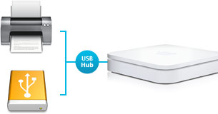

Externe harde schijven en Airport Extreme
zondag 6 april 2008
 Ik heb grote kuis gehouden in mijn digitale opslagvoorzieningen. De hele rimram van over de jaren verzamelde netwerk-, usb-, en andere externe schijven van diverse plumage heb ik stuk-voor-stuk afgekoppeld, op Kapaza geplaatst of verspreid in de familie. In plaats daarvan zijn er vier doodeenvoudige Iomega USB schijven gekomen van 500 Gig (72 €/stuk in Office Center).
Ik heb grote kuis gehouden in mijn digitale opslagvoorzieningen. De hele rimram van over de jaren verzamelde netwerk-, usb-, en andere externe schijven van diverse plumage heb ik stuk-voor-stuk afgekoppeld, op Kapaza geplaatst of verspreid in de familie. In plaats daarvan zijn er vier doodeenvoudige Iomega USB schijven gekomen van 500 Gig (72 €/stuk in Office Center).
Ze liggen intussen allemaal op zolder, netjes gekoppeld aan een Airport Extreme router via een 7-poorts USB-hub. Via de Airdisk functionaliteit, ingebakken in de Airport Extreme, kunnen alle computers hier thuis (Mac én Windows) er simultaan aan via het netwerk.
Voordelen van deze opstelling:
- De (eenvoudige, goedkope) USB schijven worden in feite (duurdere) netwerkschijven doordat ze op de Airport Extreme zijn aangesloten: elke computer in ons netwerk kan er tegelijkertijd aan (denk iTunes server). Een ander voordeel van (semi-) netwerkschijven is dat je ze — hun gezoem, gekraak en kabelchaos incluis — netjes op de zolder kan wegstoppen.
- De vier schijven zijn exact even groot. Dat maakt het gemakkelijk om één-op-één kopieën te maken. Zo durf ik mijn foto’s en mijn muziekcollectie niet aan het lot van één harde schijf verbinden (die dingen gaan ooit kapot). Op geregelde tijdstippen maak ik daarom een exacte kopie naar een andere schijf, zonder dat ik me zorgen hoef te maken over plaatsgebrek.

De Airport Extreme communiceert met de harde schijven via AFP (Apple Filing Protocol), wat veruit de beste methode is als er veel met Mac-data heen-en-weer wordt gesleurd. Veel échte netwerkschijven (met een netwerkpoort en een eigen IP) kunnen alleen via SMB/CIFS communiceren (Maxtor bv.), maar met dat typische Windows-protocol kom je gegarandeerd ooit in de problemen: corrupte bestandsnamen, kapotte bestanden. Andere, zoals die van Lacie, beweren wel AFP-compatibel te zijn, maar de implementatie ervan laat veel te wensen over (onbereikbare shares, uitvallende connectie, … I’ve seen it all). Bij de Airport Extreme, hoe kan het ook anders, werkt AFP uitstekend, ook op PC.- Time Machine: eindelijk kan ik deze interessante backup-oplossing van Mac OS X gebruiken! Sinds de grote 10.5.2 update van het besturingssysteem kan je immers ook naar Airdisks backuppen. Onze beide home folders worden nu continu en onzichtbaar gespiegeld naar één van de vier schijven, die dan ook enkel en alleen instaat voor deze taak.
- Het onderdeeltje Shared in de Finder is heel wat overzichtelijker geworden (zie screenshot). Alle schijven staan netjes onder elkaar bij Airport Extreme. Vroeger was het een zootje ongeregeld doordat de aparte netwerkschijven (vooral die van Lacie) een veelheid aan netwerknamen in het rond spuwden. Voor één netwerkschijf stond er soms achtereenvolgens: lacie, LACIESMB, LacieAFP… Het ergste van de zaak was dat je deze netwerknamen niet kon veranderen, of dat de ene mét hoofdletters staat gespeld en de andere niet… Een echte eye sore.

Enkele bemerkingen:
- Om de schijven te kunnen gebruiken als Airdisks, moeten ze geformatteerd zijn met HFS+, de standaardindeling van Mac computers. Dat doe je met Disk Utility voor je de schijven koppelt aan de Airport Extreme. Tijdens deze stap worden de schijven meteen ook Time Machine compatibel gemaakt (zie volgende bemerking). Het grote nadeel is dat HFS+ geformatteerde schijven niet meer rechtstreeks aan een Windows PC kunnen gehangen worden. Met Macdrive kan dat wel, maar dat Windowsprogramma kost geld ($49,95). Het voordeel van HFS+ is dat je nooit in de knoei zal geraken met lange bestandsnamen en vreemde tekens. Bij FAT32 is dat namelijk schering en inslag. Ik heb goede ervaringen met EXT3, het Linux-indelingsformaat dat onder andere door de netwerkschijven van Lacie wordt gebruikt. Maar EXT3 kan je dan weer niet lezen op Mac én PC als je de schijf via USB aan de computer hangt.
- Harde schijven zijn pas bruikbaar voor Time Machine als je ze ooit eens aan een Mac met Leopard OS X 10.5.2 hebt gehangen. De Mac ‘zegent’ dan de schijf door een er een leeg en onzichtbaar bestandje op weg te schrijven dat dient als bevestiging voor Time Machine dat de schijf kan gebruikt worden. Ik had — onwetende — via Vista alle typische onzichtbare bestanden waarmee Mac schijven worden bevuild, weggekieperd, inclusief dat speciale bestandje. Tot mijn grote ergernis verschenen later de schijven niet meer in het configuratiepaneel van Time Machine. Ik plaatste een vraag hierover op het Apple Support Forum, maar kwam er even later zelf achter.

Om de schijven automatisch te mounten na een reboot, kan je ze toevoegen aan het opstartlijstje van je gebruiker (in System Preferences). Meer zelfs: als je dit niet doet, zal Time Machine niet werken. Die schiet maar in actie vanaf het moment dat deze ‘zijn’ harde schijf ziet verschijnen in Finder.Dit blijkt achteraf niet zo’n goed idee: beter is om de schijven telkens manueel te mounten na een herstart of een network eject.- Gigabytes verslepen kan via Finder of Windows Verkenner. Maar wanneer het echt om grote brokken data gaat, vertrouw ik liever op een synchronisatieprogrammaatje. Finder blijft wel eens hangen of doet moeilijk over de rechten van een bepaald bestand en stopt dan abrupt het kopieerproces waar je misschien al drie uur mee bezig was. En Windows Verkenner, welja, u snapt het plaatje. Met Déjà Vu ($24,95) kan je om het even welke map op het even welk volume synchroniseren naar een andere locatie. Gebeurt er iets tijdens het kopieerproces (fout, panne, reboot) dan breit de software later gewoon verder waar het de laatste keer gebleven was. Ook onzichtbare of speciale systeembestanden worden feilloos overgepompt, wat lang niet het geval is met Finder.
- De snelheid waarmee van en naar de schijven kan gelezen en geschreven worden is rechtevenredig met de snelheid van het netwerk. Mijn iMac en de Vista HP zijn verbonden via een netwerkkabel aan de Airport Extreme, die voorzien is van 3 Gigabituitgangen. Films streamen, muziek beluisteren of pakweg een Adobe Photoshop Lightroom catalog uitlezen vanaf de schijven is geen enkel probleem. Het gaat vooruit, maar het is in geen opzicht te vergelijken met de snelheid van een USB 2.0 verbinding. Julie’s — inmiddels behoorlijk verouderende — Powerbook 12″ daarentegen is draadloos verbonden (via 802.11g) en boet bijgevolg navenant in aan snelheid, hoewel muziek en films streamen bij haar eveneens feilloos werkt. Echte grote datablokken (ik spreek over 10-tallen gigabytes) moet je echter niet proberen verhuizen met haar mini Powerbookje.

Ik ben wreed content dat dit geregeld is. Een beetje trots zelf. Ontelbare keren heb ik het er al over gehad met vrienden (allez, met Mich en kpi om precies te zijn) maar nu heb ik de ideale set up ineengeknutseld, een zen-punt bereikt, mijn Gigabyte Utopia ontdekt. Alleen een Drobo was nog beter geweest…
Mich op 6 april 2008
‘k Dacht al dat het iets té spotgoedkoop was: die Iomega HD’s zijn 87 euro met BTW en recupel is op het eerste gezicht ook niet inbegrepen. Pak dus toch een 90-tal euro – hoewel nog altijd iets goedkoper dan de standaardprijs.
Die 4 USB desktopschijven werken misschien de facto als netwerkschijven, maar ze moeten wel een voor een in een stopcontact én handmatig aangezet worden; ik zou toch eens willen weten hoeveel energie ze vreten. Leve Drobo indeed :)